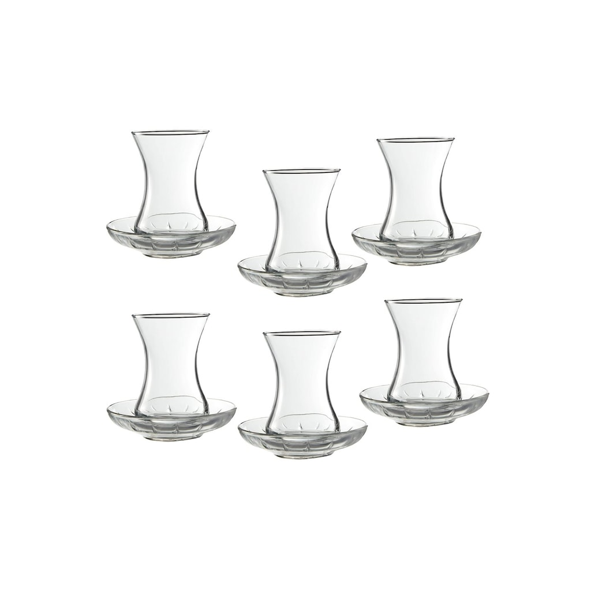

01
The classic shape
The familiar tulip shape is a favourite for traditional tea. Its curved middle gives the glass a graceful look and makes it easy to hold.
Choose this style if you like simple glassware that feels at home on an everyday tea tray.